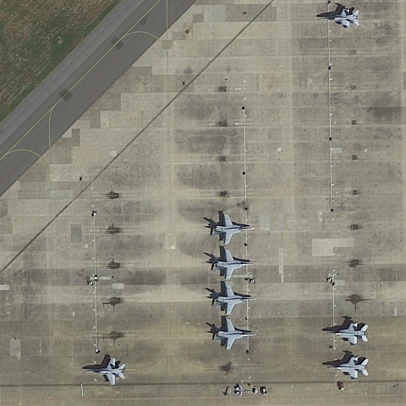
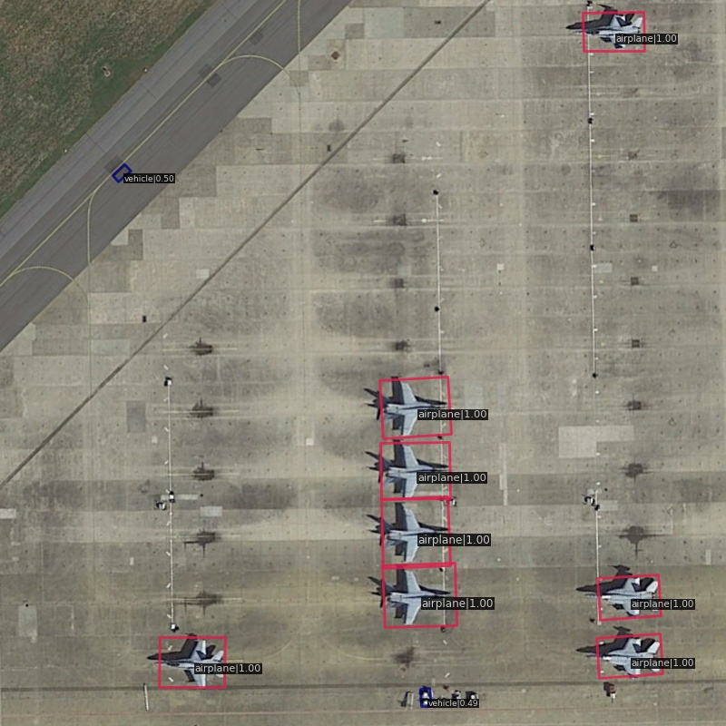

Remote sensing object detection
Frequency–spatial evidence, evaluated across three benchmarks.
FreSpaEDL combines frequency-aware feature mining, spatial-semantic calibration, and evidential learning for oriented object detection.
Interactive result viewer
Inspect the input and detection output.
These verified examples were generated with the epoch-12 DIOR-R model at a score threshold of 0.30.


Upload-and-run demo
Launch online demo →
Upload a remote-sensing image or select an example and run FreSpaEDL directly in the browser. The implementation and checkpoint remain server-side during review.
Reported results
Dataset-level and category-level evaluation.
Values match the current manuscript tables.
80.11 mAP15 oriented object categories · single-scale training and testing
| Category | AP | Category | AP | Category | AP |
|---|---|---|---|---|---|
| Plane | 89.43 | Baseball diamond | 85.39 | Bridge | 56.84 |
| Ground track field | 78.38 | Small vehicle | 82.00 | Large vehicle | 85.59 |
| Ship | 88.45 | Tennis court | 90.85 | Basketball court | 87.16 |
| Storage tank | 86.29 | Soccer-ball field | 69.16 | Roundabout | 68.62 |
| Harbor | 78.51 | Swimming pool | 80.96 | Helicopter | 74.11 |
69.70 AP5020 oriented object categories · held-out test split
| Category | AP | Category | AP |
|---|---|---|---|
| Airplane | 72.13 | Airport | 50.52 |
| Baseball field | 80.60 | Basketball court | 89.94 |
| Bridge | 48.06 | Chimney | 77.88 |
| Dam | 39.50 | Expressway toll station | 74.53 |
| Expressway service area | 87.00 | Golf field | 78.54 |
| Ground track field | 84.39 | Harbor | 46.34 |
| Overpass | 61.50 | Ship | 81.23 |
| Stadium | 81.29 | Storage tank | 70.62 |
| Tennis court | 89.93 | Train station | 64.00 |
| Vehicle | 49.49 | Windmill | 65.59 |
Ship detectionHigh-resolution, arbitrary-orientation benchmark
Novel-class detectionDIOR few-shot protocol
| Training shots | Base AP | Novel AP |
|---|---|---|
| 5 | 76.2 | 44.0 |
| 10 | 75.5 | 46.1 |
| 20 | 75.8 | 56.6 |